한국사능력검정시험-초급(폐지) (2015-10-24 기출문제)
1. (가)에 들어갈 내용으로 옳은 것은? [2점]
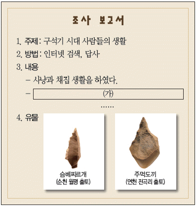
- 토기에 식량을 저장하였다.
- 주로 동굴과 막집에서 살았다.
- 가락바퀴를 이용하여 실을 뽑았다.
- 갈돌과 갈판을 이용하여 곡식을 갈았다.
(정답률: 91%)

2. (가) 국가에 대한 설명으로 옳은 것은? [2점]
- 화백 회의가 있었다.
- 우리나라 최초의 국가였다.
- 칠지도를 왜왕에게 하사하였다.
- 서옥제라는 혼인 풍습이 있었다.
(정답률: 92%)
3. 다음 연극 대본을 통해 알 수 있는 나라에 대한 설명으로 옳은 것은? [2점]
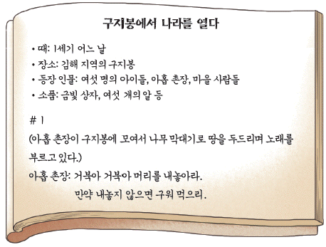
- 낙랑과 왜에 철을 수출하였다.
- 영고라는 제천 행사가 있었다.
- 화랑도라는 청소년 단체가 있었다.
- 빈민 구제 제도인 진대법이 있었다.
(정답률: 64%)
4. 선생님의 질문에 대한 학생의 대답으로 옳은 것은? [3점]
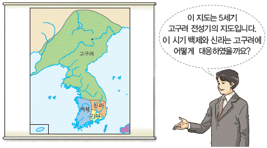
- 신라는 백제와 동맹을 맺어 고구려에 맞섰어요.
- 신라가 당나라와 연합하여 고구려를 공격하였어요.
- 백제가 고구려를 공격하여 고국원왕을 전사시켰어요.
- 백제는 중흥의 기반을 마련하기 위해 수도를 사비로 옮겼어요.
(정답률: 66%)
5. (가)에 들어갈 왕으로 옳은 것은? [2점]
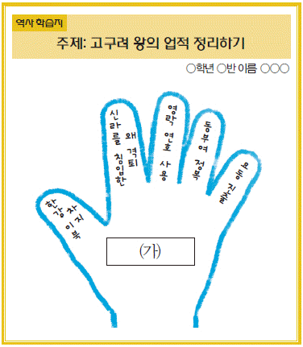
- 장수왕
- 진흥왕
- 소수림왕
- 광개토 대왕
(정답률: 71%)
6. 학생들이 공통으로 이야기하고 있는 문화유산으로 옳은 것은? [2점]
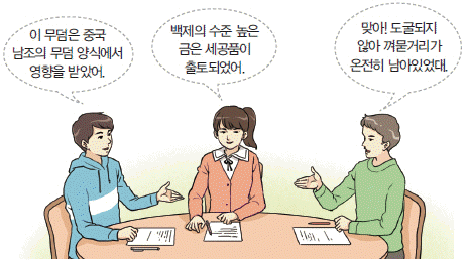
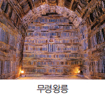
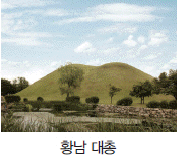
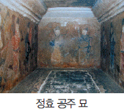
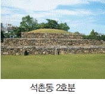
(정답률: 74%)
7. (가)~(다)의 사건을 일어난 순서대로 옳게 나열한 것은? [3점]
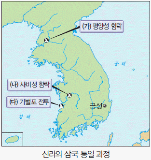
- (가) - (나) - (다)
- (나) - (가) - (다)
- (다) - (가) - (나)
- (다) - (나) - (가)
(정답률: 39%)
8. 다음 인물들이 활동했던 국가에서 만들어진 탑으로 옳은 것은? [2점]
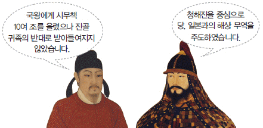
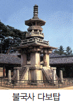
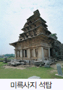
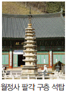
(정답률: 48%)
9. (가) 국가에 대한 설명으로 옳지 않은 것은? [3점]
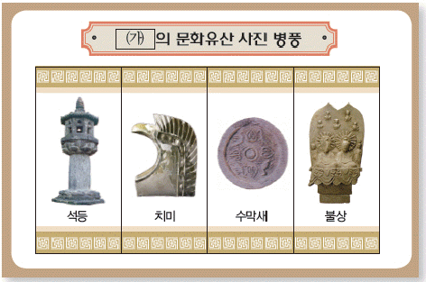
- 고구려 유민들이 건국하였다.
- 전성기에 해동성국이라 불리었다.
- 거란의 침략을 받아 멸망하였다.
- 전국에 9주 5소경을 설치하였다.
(정답률: 54%)
10. 다음 자료에 대한 학생의 설명으로 옳지 않은 것은? [3점]
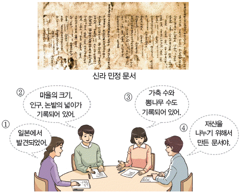
- ①
- ②
- ③
- ④
(정답률: 48%)
11. (가)~(다)의 인물을 활동했던 시대 순으로 옳게 나열한 것은? [3점]
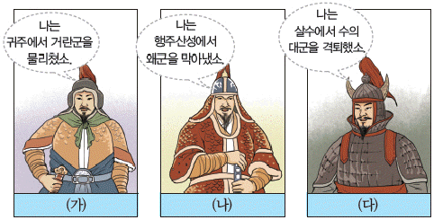
- (가) - (나) - (다)
- (나) - (다) - (가)
- (다) - (가) - (나)
- (다) - (나) - (가)
(정답률: 65%)
12. (가)에 들어갈 내용으로 옳은 것은? [3점]
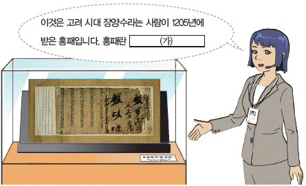
- 16세 이상의 남자에게 발급했던 신분증입니다.
- 과거에 급제한 사람에게 주었던 증서의 일종입니다.
- 관원이 역에서 말을 빌리는 데 사용했던 증표입니다.
- 국가의 재정을 보충하기 위해 팔았던 관직 임명장입니다.
(정답률: 45%)
13. 밑줄 그은 ‘이곳’을 지도에서 옳게 찾은 것은? [2점]
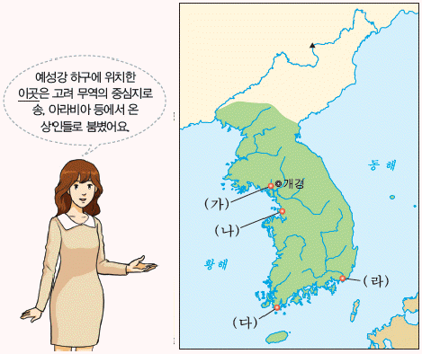
- (가)
- (나)
- (다)
- (라)
(정답률: 45%)
14. 다음 가상 일기의 밑줄 그은 ‘나’의 활동으로 옳은 것은? [2점]
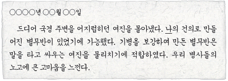
- 동북 9성을 쌓았다.
- 4군 6진을 개척하였다.
- 강동 6주를 획득하였다.
- 백두산 정계비를 세웠다.
(정답률: 54%)
15. (가)에 들어갈 내용으로 옳은 것은? [3점]
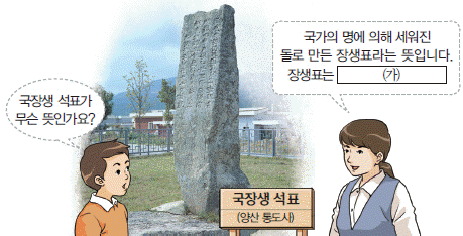
- 절에서 불을 밝히기 위한 용도로 만든 것입니다.
- 승려의 사리나 유골을 모시기 위해 만든 것입니다.
- 절이 보유한 땅의 경계를 표시하기 위해 만든 것입니다.
- 절의 야외 행사에서 대형 불화를 걸기 위해 만든 것입니다.
(정답률: 58%)
16. 다음 가상 대화가 이루어진 시기를 연표에서 옳게 고른 것은? [3점]
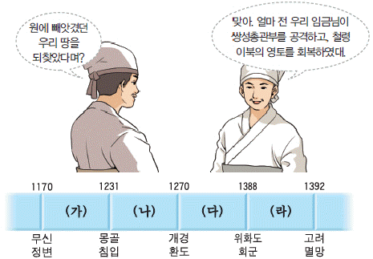
- (가)
- (나)
- (다)
- (라)
(정답률: 45%)
17. (가)에 들어갈 역사 용어로 옳은 것은? [2점]
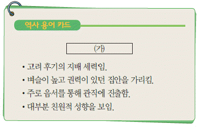
- 호족
- 6두품
- 권문세족
- 신진 사대부
(정답률: 56%)
18. 밑줄 그은 ‘이것’으로 옳은 것은? [2점]
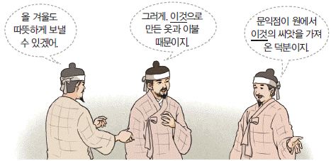
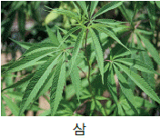
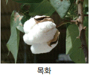
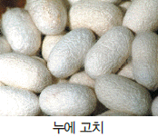
(정답률: 85%)
19. (가)에 들어갈 민속 놀이로 옳은 것은? [2점]
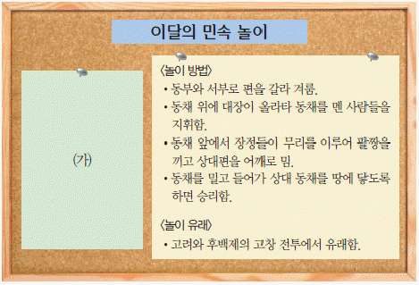
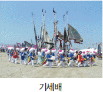
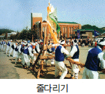
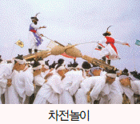
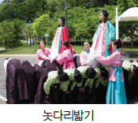
(정답률: 79%)
20. 다음 역사 다큐멘터리의 장면에 해당하는 전투로 옳은 것은? [3점]
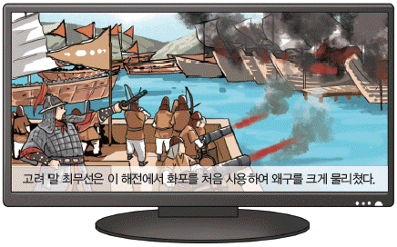
- 진포 대첩
- 명량 대첩
- 황산 대첩
- 홍산 대첩
(정답률: 63%)
21. (가), (나) 인물에 대한 설명으로 옳지 않은 것은? [3점]
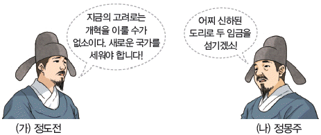
- (가) - 불씨잡변을 지어 불교를 비판하였다.
- (가) - 성리학을 바탕으로 사회를 개혁하고자 했다.
- (나) - 역사서인 동국통감을 저술하였다.
- (나) - 조선 건국에 반대하다 죽임을 당했다.
(정답률: 48%)
22. 다음 가상 대화 장면에 해당하는 왕으로 옳은 것은? [2점]
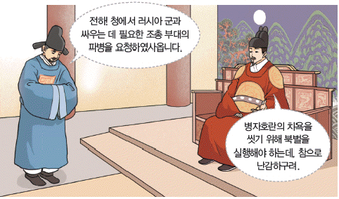
- 인조
- 효종
- 광해군
- 연산군
(정답률: 36%)
23. (가)에 들어갈 기관으로 옳은 것은? [2점]
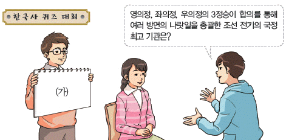
- 승정원
- 의금부
- 의정부
- 춘추관
(정답률: 63%)
24. (가)에 들어갈 책으로 옳은 것은? [2점]
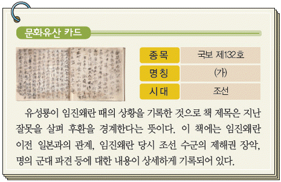
- 임진록
- 징비록
- 난중일기
- 매천야록
(정답률: 45%)
25. 다음 가상 편지를 쓴 인물의 관직으로 옳은 것은? [3점]
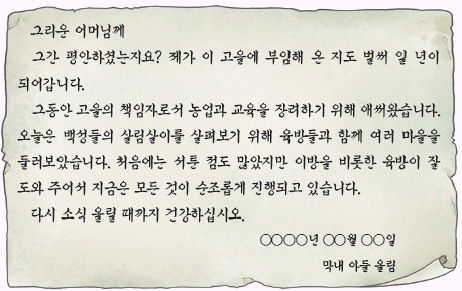
- 수령
- 역관
- 암행어사
- 포도대장
(정답률: 52%)
26. (가)에 들어갈 내용으로 옳은 것은? [2점]
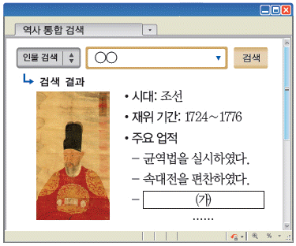
- 탕평비를 세웠다.
- 경국대전을 완성하였다.
- 훈민정음을 창제하였다.
- 수원에 화성을 건설하였다.
(정답률: 61%)
27. 다음 주제에 대한 학생들의 대화 내용으로 옳지 않은 것은? [2점]
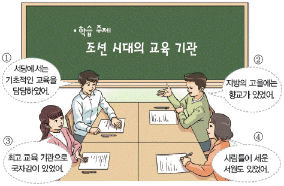
- ①
- ②
- ③
- ④
(정답률: 60%)
28. (가)에 들어갈 무형 문화유산으로 옳은 것은? [2점]
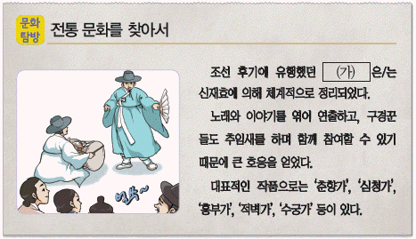
- 별신굿
- 판소리
- 사물놀이
- 산대놀이
(정답률: 85%)
29. 다음 가상 대화가 이루어진 시기의 생활 모습으로 옳은 것은? [3점]
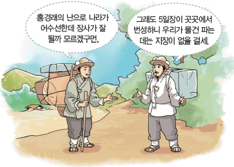
- 먹을 만드는 소의 주민
- 고구마 농사를 짓는 농민
- 검정 고무신을 신고 다니는 아이
- 건원중보로 물건을 구입하는 상인
(정답률: 43%)
30. (가)에 들어갈 사진으로 옳은 것은? [2점]
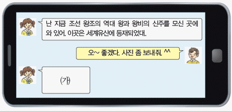
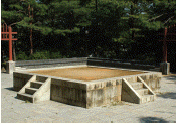
(정답률: 65%)
31. 다음 자료에서 설명하는 사건으로 옳은 것은? [2점]
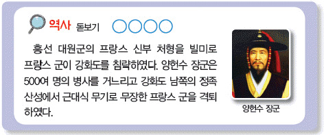
- 갑신정변
- 병인양요
- 신미양요
- 임오군란
(정답률: 69%)
32. (가)에 해당하는 답사 장소로 옳은 것은? [3점]
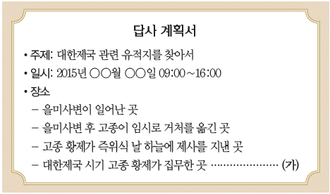
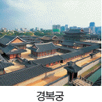
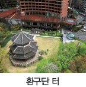
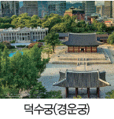
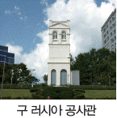
(정답률: 34%)
33. 밑줄 그은 ‘이 조약’의 내용으로 옳은 것은? [3점]
- 군대의 해산
- 사법권의 상실
- 외교권의 박탈
- 세 항구의 개항
(정답률: 56%)
34. 다음 공모전에 출품할 작품으로 적절하지 않은 것은? [3점]
(정답률: 48%)
35. 다음 여행기에서 소개하는 인물로 옳은 것은? [2점]
- 김좌진
- 신돌석
- 안창호
- 홍범도
(정답률: 43%)
36. 인물과 그가 활동한 단체의 연결이 옳은 것은? [3점]
(정답률: 52%)
37. 밑줄 그은 ‘이 건물’에 대한 설명으로 옳은 것은? [3점]
- 경성부의 부청으로 사용된 건물이었다.
- 식민 통치의 중심이었던 조선 총독부 건물이었다.
- 화폐 정리 사업을 담당한 일본 제일 은행 건물이었다.
- 나석주가 폭탄을 던진 동양 척식 주식회사 건물이었다.
(정답률: 70%)
38. 다음 기획전에서 볼 수 있는 사진으로 옳은 것은? [3점]
(정답률: 54%)
39. (가)에 들어갈 수 있는 사진으로 적절하지 않은 것은? [3점]
(정답률: 25%)
40. (가)의 계기가 된 사건으로 옳은 것은? [3점]
- 4·19 혁명
- 6월 민주 항쟁
- 5·16 군사 정변
- 5·18 민주화 운동
(정답률: 45%)